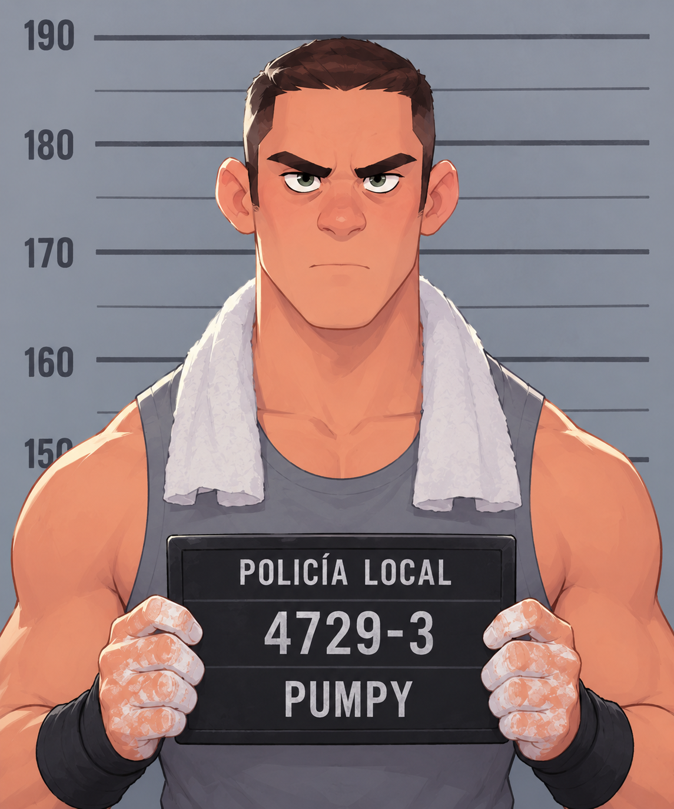
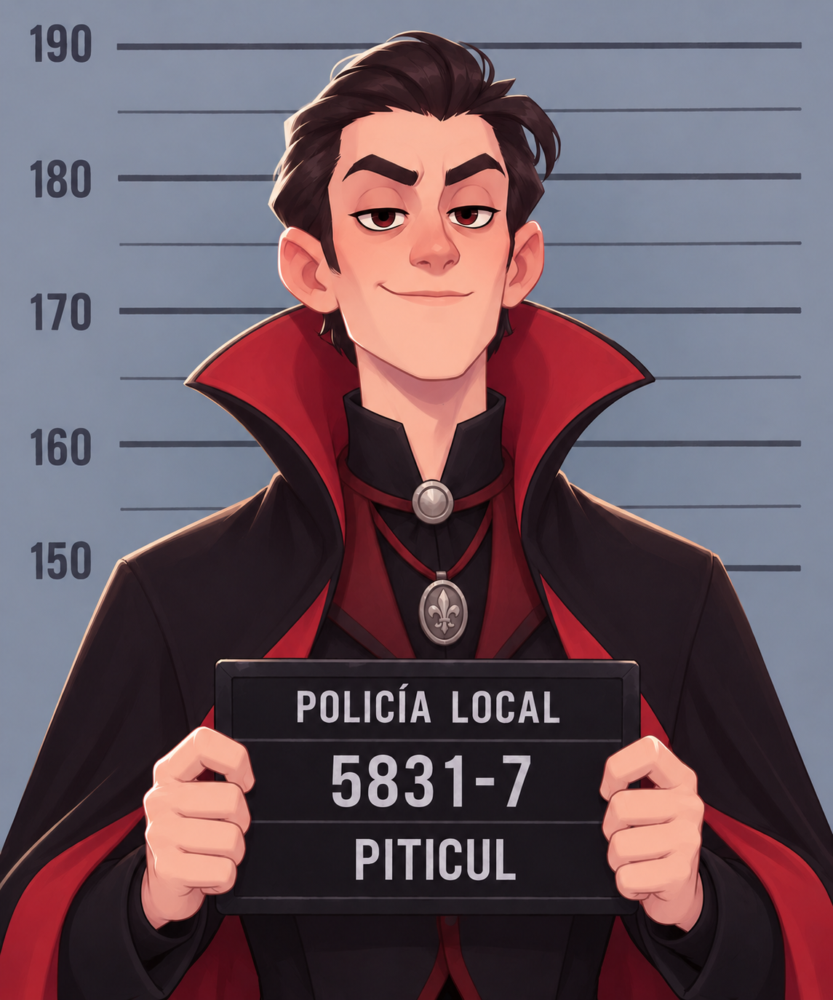
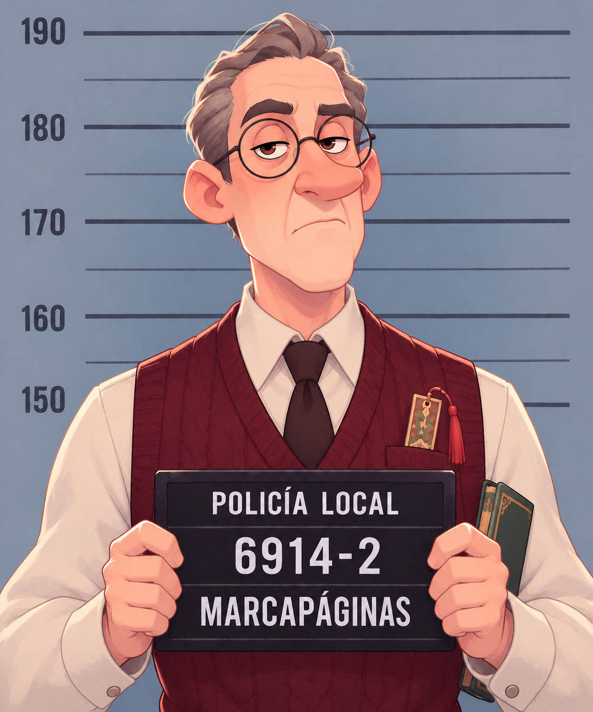
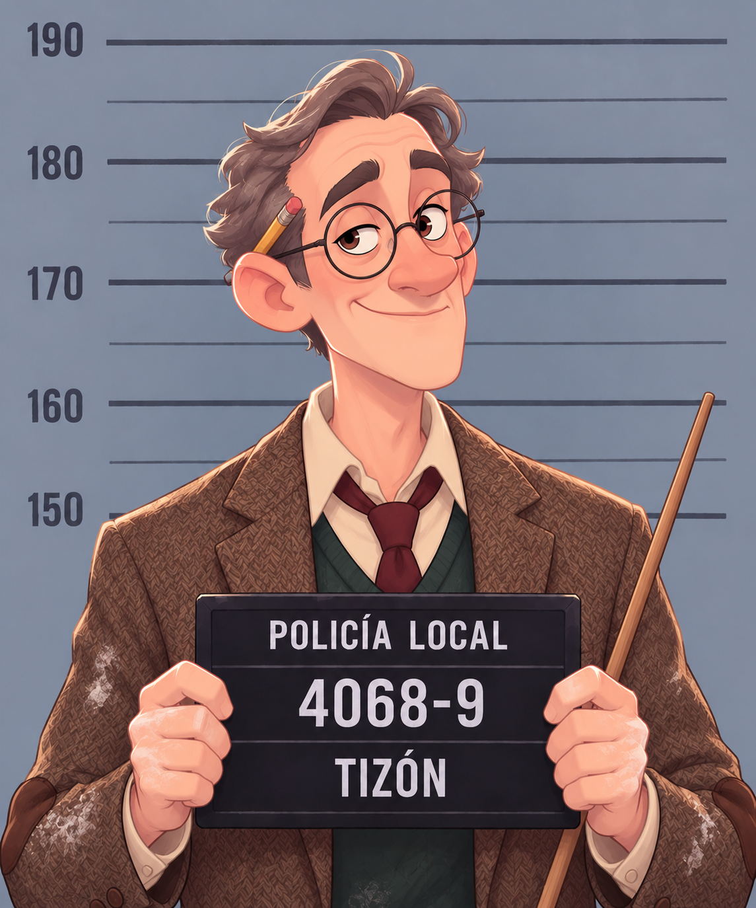
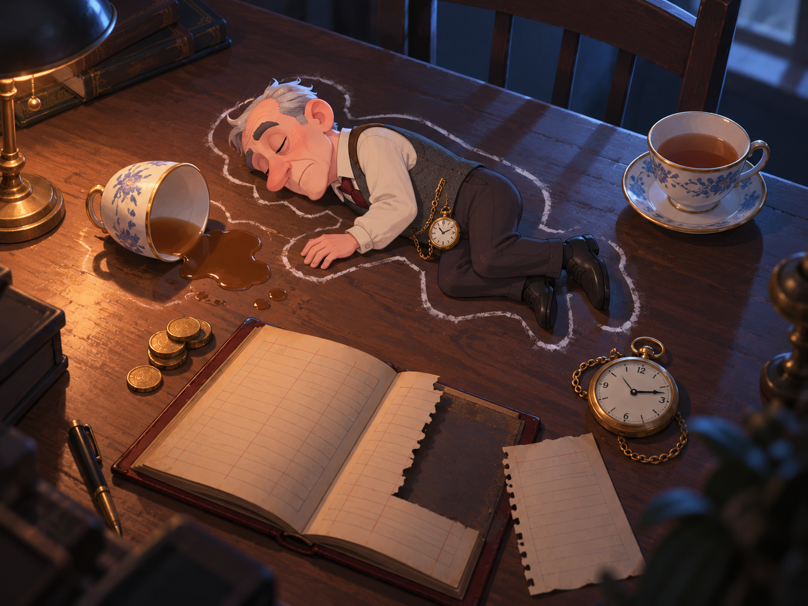
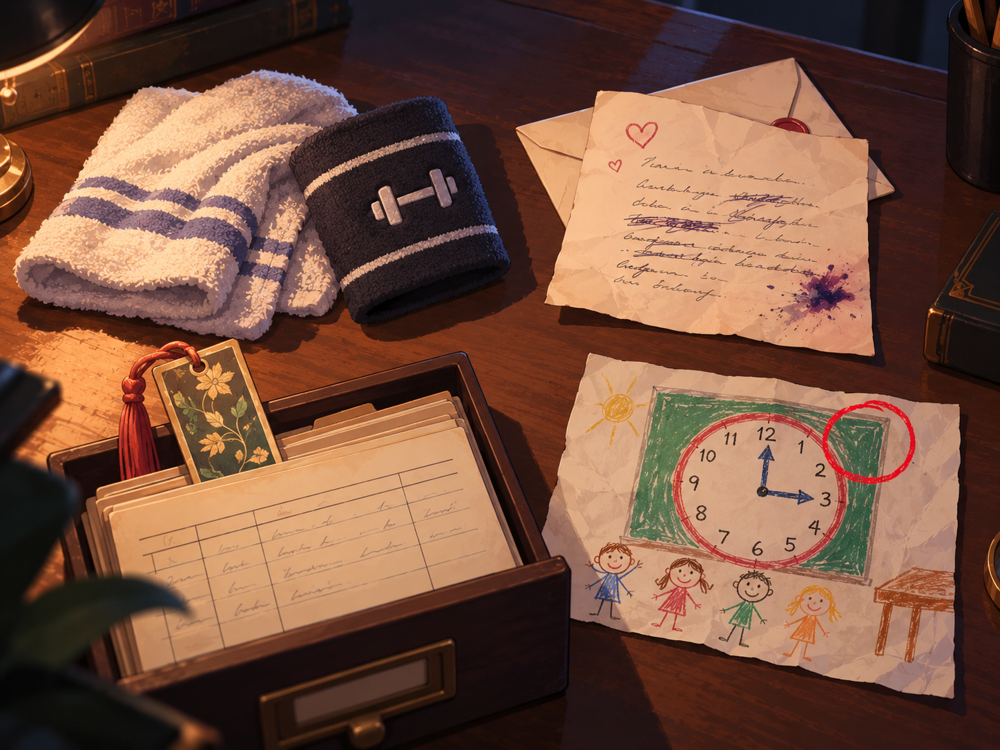
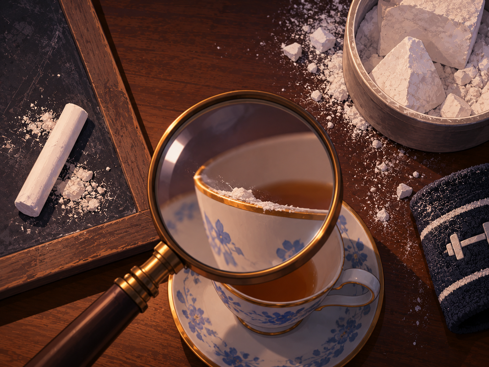

Operación Taza Fría

El líder de los pequeños muchachos ha aparecido sin vida junto a una taza de té. El libro de cuentas está abierto y falta una página. Los demás han desaparecido.
Escanea el código de cada ficha para abrir su expediente. Cada sobre trae un código para el archivo de pruebas.
Pumpy
Sospechoso

- Oficio
- Culturista. Entrena a todas horas.
- Declaración
- «Yo estaba en el gimnasio. Pregunten a quien quieran.»
- Coartada
- Dice haber estado entrenando toda la noche.
Vlad Piticul
Sospechoso

- Oficio
- Caballero elegante, siempre con capa. Natural de los Cárpatos.
- Declaración
- «Duermo de día y no recuerdo nada. Solo sé que la quería a ella.»
- Coartada
- Ninguna. Nadie lo vio en toda la noche.
Don Marcapáginas
Sospechoso

- Oficio
- Bibliotecario de los pequeños muchachos.
- Declaración
- «Pasé la noche catalogando. Ni siquiera sabía lo del testamento.»
- Coartada
- Varios testigos lo vieron en la biblioteca.
Profesor Tizón
Sospechoso

- Oficio
- Maestro de los pequeños muchachos. Siempre con su puntero.
- Declaración
- «Estaba dando clase. Tengo un dibujo con la hora.»
- Coartada
- Un dibujo firmado, aunque la fecha no cuadra.
Archivo de pruebas
Introduce el código del sobre para abrir la prueba.
Prueba 1: informe del forense
Archivo abierto

Hora de la muerte: 3:15. Causa: sustancia disuelta en la taza de té. Se encontraron dos tazas sobre la mesa. Conclusión: la víctima recibió una visita.
Prueba 2: coartadas
Archivo abierto

Pumpy y Don Marcapáginas tienen testigos. Vlad no tiene coartada, pero entre sus cosas hay una carta de amor sin enviar. Tizón dice haber dado clase, pero su dibujo con la hora lleva una fecha equivocada.
Prueba 3: libro de cuentas
Archivo abierto
Faltan las páginas de las últimas semanas, justo las que incriminan a quien se llevaba monedas de la hucha. En el margen alguien escribió: «Urmărește banii».
Prueba 4: las tizas
Archivo abierto

Hay dos tipos de tiza: la blanca de pizarra y la de magnesio de gimnasio. Pumpy tiene magnesio en las manos. Pero el borde de la taza está manchado de tiza de pizarra.
Acusación final
Elige al culpable y su móvil. Solo hay una acusación correcta.
Caso resuelto
Los pequeños muchachos te lo agradecen. Abre la .